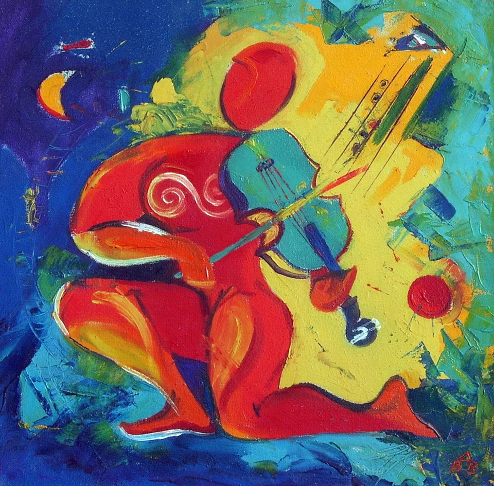

Skip to content
Vasilka Sotirova - Artist
Home
Gallery
Bio
Contact
EN
English
BG
Български
Back to Abstract Paintings

Abstract painting of a red figure playing a turquoise violin
Copy link
← Previous work
Next work →